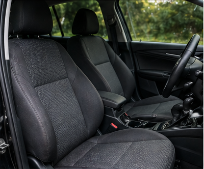
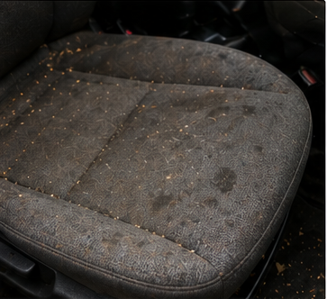
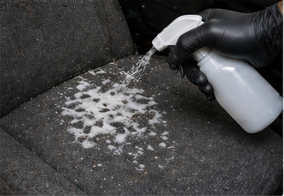
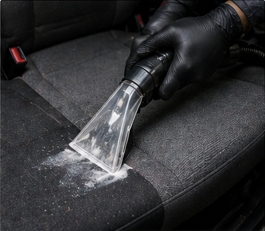
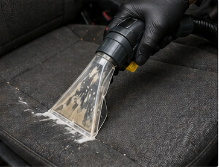
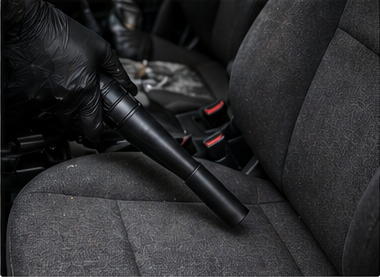
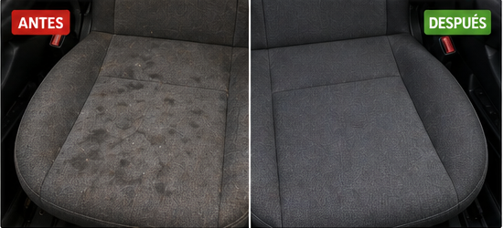

La tapicería de un vehículo es uno de los sistemas interiores más expuestos al desgaste diario. A diferencia de la pintura exterior, que puede protegerse con ceras, selladores o recubrimientos, el interior trabaja en contacto directo con ocupantes, humedad ambiental, polvo mineral, grasas corporales, restos orgánicos y contaminantes microscópicos. Por eso, la limpieza de tapicería de carros no debe entenderse como una simple remoción superficial de suciedad, sino como un proceso técnico de extracción, sanitización, estabilización química y secado controlado.

Contenido del artículo
- Capítulo 1: La naturaleza de los textiles automotrices
- Capítulo 2: Contaminación, manchas y desgaste interior
- Capítulo 3: La química detrás de la limpieza
- Capítulo 4: Protocolo profesional de restauración profunda
- Capítulo 5: Tratamiento de manchas específicas
- Capítulo 6: Secado, prevención y conclusión técnica
Capítulo 1: La Naturaleza de los Textiles Automotrices
Para limpiar correctamente, primero es necesario comprender el sustrato. La mayoría de los vehículos modernos emplea poliéster de alta densidad, poliamidas o mezclas sintéticas diseñadas para resistir abrasión, radiación y fatiga mecánica. Sin embargo, incluso estos materiales presentan una estructura de microcapilares que facilita la retención de polvo, sales, compuestos grasos y humedad. Cuando el contaminante penetra, deja de ser un problema visual y pasa a convertirse en un problema estructural y microbiológico.
Esta lógica también explica por qué muchas técnicas utilizadas en limpieza de tapicería de muebles, limpieza tapizados sillones o incluso en guías caseras sobre cómo limpiar la tapicería de la sala no siempre funcionan igual dentro de un automóvil. El interior de un vehículo está sometido a temperaturas más variables, menor ventilación, radiación solar directa a través de cristales y una geometría mucho más cerrada que dificulta el secado natural.
1.1 Fibras sintéticas, espumas y estructura capilar
Una tapicería automotriz no es solo una tela visible. Debajo de la superficie existe una combinación de espumas, adhesivos, costuras, refuerzos y sensores en algunos asientos modernos. Por ello, cuando alguien busca cómo limpiar tapizados de tela, debe entender que el objetivo no es empapar el asiento, sino trabajar de forma controlada para remover suciedad sin saturar las capas internas.
Acumulación de polvo, grasa y humedad
El polvo mineral, la arena fina y los residuos secos que se depositan en asientos y alfombras actúan como abrasivos de escala microscópica. Con el movimiento repetido del usuario, esas partículas generan fricción localizada, erosionan filamentos y aceleran el desgaste de la base textil. En términos prácticos, un interior aparentemente limpio puede seguir deteriorándose si la carga sólida no ha sido retirada completamente antes de aplicar humedad o agitación.
Además, la grasa corporal y los residuos orgánicos se adhieren a las fibras y forman una película que atrapa más suciedad. Esa capa no siempre se observa a simple vista, pero modifica el tacto del material, oscurece la tela y facilita la aparición de olores persistentes.

Capítulo 2: Contaminación, Manchas y Desgaste Interior
El habitáculo de un automóvil concentra contaminantes de origen muy diverso: partículas del calzado, residuos de comida, sudor, protectores solares, humo, bebidas derramadas, grasa mecánica y polvo ambiental. A diferencia de un sofá doméstico, el asiento de un vehículo trabaja en un espacio cerrado, con ciclos de calor intenso y enfriamiento rápido. Por eso, aunque algunos principios de limpieza de tapicería de muebles sean útiles, el automóvil requiere un protocolo más estricto de extracción y secado.
2.1 Microbiología en el habitáculo
La combinación de calor, humedad residual y restos orgánicos crea condiciones favorables para la proliferación de bacterias, hongos y ácaros. La limpieza profesional del interior no debe limitarse a mejorar apariencia, sino también a reducir carga microbiológica y cortar el ciclo que produce malos olores, sensación de encierro y degradación del ambiente interior del vehículo.
2.2 Diferencia entre limpiar y restaurar
Limpiar significa retirar suciedad visible y parte de la contaminación superficial. Restaurar implica ir más allá: extraer residuos profundos, equilibrar pH, eliminar humedad excedente y proteger el material para reducir reensuciamiento. Por eso, las búsquedas como limpieza tapizados sillones, cómo limpiar la tapicería de la sala o limpieza de tapicería de carros pueden parecer similares, pero el procedimiento técnico cambia según el material, la profundidad de la suciedad y el entorno de uso.
Capítulo 3: La Química Detrás de la Limpieza
La limpieza profesional no es un proceso aleatorio, sino una reacción química controlada. La remoción de suciedad depende de cuatro variables clásicas: tiempo de contacto, acción química, acción mecánica y temperatura. Esta lógica, conocida como círculo de Sinner, permite entender por qué un mismo producto puede rendir bien o mal según su dilución, permanencia, temperatura de trabajo y método de extracción.
3.1 El factor del pH
Los limpiadores de interiores suelen formularse dentro de rangos específicos de acidez o alcalinidad. La suciedad grasa responde mejor a medios ligeramente alcalinos, ya que estos ayudan a romper enlaces asociados a aceites y residuos orgánicos. Sin embargo, una limpieza eficaz no termina al retirar la mancha: también debe reequilibrar la superficie. Si queda residuo alcalino en las fibras, el tejido tenderá a atraer suciedad nueva con mayor rapidez y aparecerá el conocido efecto de reensuciamiento prematuro.
Pretratamiento químico de manchas
El pretratamiento consiste en aplicar un producto específico antes de la extracción. Su función es ablandar, separar o encapsular la suciedad para que pueda retirarse con menor agresividad mecánica. Este paso es especialmente importante en manchas de grasa, bebidas, barro seco o residuos orgánicos que ya se han fijado dentro de la fibra.
En procesos profesionales, el producto debe respetar el material. Una formulación demasiado agresiva puede decolorar la tela, endurecer fibras o dejar residuos pegajosos. Por eso, el criterio de dilución es tan importante como la elección del químico.

3.2 Surfactantes y encapsulación
Los surfactantes reducen la tensión superficial del agua y permiten que el líquido penetre mejor en la suciedad adherida. Los encapsuladores, por su parte, rodean la partícula contaminante y favorecen su cristalización o suspensión para facilitar la extracción posterior. Estas tecnologías son especialmente útiles cuando se busca limpiar sin empapar en exceso o cuando se requiere un mantenimiento periódico con tiempos de secado más controlados.
Capítulo 4: Protocolo Profesional de Restauración Profunda
Un procedimiento profesional debe seguir una secuencia lógica. Saltarse etapas o alterar el orden suele producir contaminación cruzada, barro interno, exceso de humedad o resultados visuales engañosos. El objetivo no es solo que el asiento se vea limpio al terminar, sino que quede realmente descontaminado, equilibrado y seco en un plazo seguro.
Aspirado previo de alta potencia
El aspirado es el primer paso real de la limpieza profunda. Antes de aplicar cualquier líquido, es obligatorio retirar tierra, polvo, migas y partículas sólidas. Si se omite esta etapa, la humedad transforma el polvo en lodo fino y lo empuja hacia capas más profundas del asiento.
Un aspirado técnico debe trabajar costuras, uniones, pliegues laterales, bases de asiento, rieles y zonas cercanas a la consola central. La limpieza de tapicería de carros falla muchas veces no por el producto usado, sino por una preparación deficiente antes de humedecer el textil.

- Aspirado de alta potencia: se retira toda la carga sólida acumulada en costuras, pliegues, bases y alfombras.
- Pretratamiento químico: se aplica el limpiador adecuado según el tipo de suciedad y material.
- Tiempo de permanencia: el producto necesita actuar para ablandar residuos incrustados antes de la agitación.
- Agitación mecánica: se emplean cepillos o herramientas textiles acordes al nivel de sensibilidad del tejido.
- Extracción por inyección-succión: se remueve la suciedad desprendida y parte del residuo químico con enjuague controlado.
- Secado acelerado: se utilizan ventiladores o flujo de aire para evitar olor a humedad y proliferación fúngica.
Extracción por inyección-succión
La extracción es la etapa que diferencia una limpieza superficial de una limpieza profunda. La máquina inyecta solución o agua controlada y, al mismo tiempo, succiona el líquido contaminado. Esto permite retirar residuos que no salen únicamente con cepillo o microfibra.
Este método es muy útil en tapizados de tela porque reduce la cantidad de residuo químico remanente. También ayuda a evitar que las manchas regresen cuando el asiento se seca, un problema frecuente cuando solo se frota la superficie sin extraer la suciedad desde la base.

Capítulo 5: Tratamiento de Manchas Específicas
No todas las manchas responden al mismo tratamiento. La naturaleza química del contaminante determina si conviene usar medios ácidos, alcalinos, enzimáticos o solventes controlados. Aplicar el producto incorrecto puede fijar la mancha, desteñir el textil o alterar la textura del material.
- Café y taninos: suelen responder mejor a limpiadores ácidos o formulaciones específicas para residuos orgánicos pigmentados.
- Sangre: debe tratarse con agua fría y limpiadores enzimáticos; el calor coagula proteínas y dificulta la extracción.
- Tinta: requiere solventes volátiles o removedores específicos aplicados con control para evitar expansión de la marca.
- Grasa mecánica: necesita agentes desengrasantes capaces de romper aceites pesados sin dañar colorantes ni fibras.
- Olor a tabaco: raramente se resuelve solo en el asiento; también suele estar presente en cielo, paneles y conductos de ventilación.
En este punto es donde muchas recomendaciones caseras sobre cómo limpiar tapizados de tela se quedan cortas. Una mancha puede desaparecer visualmente y, aun así, dejar residuo en la fibra. Por eso la extracción, el enjuague controlado y el secado son tan importantes como el producto usado.
Capítulo 6: Secado, Prevención y Conclusión Técnica
El secado es una etapa crítica. Una tapicería puede verse limpia, pero si permanece húmeda durante muchas horas, se convierte en un entorno favorable para hongos, bacterias y olores persistentes. El secado debe realizarse con ventilación, circulación de aire y, cuando sea posible, exposición indirecta al calor sin sobrecalentar el material.
Secado controlado del interior
Después de una extracción profunda, el objetivo es reducir la humedad residual lo antes posible sin deformar tejidos ni endurecer fibras. El flujo de aire dirigido permite acelerar el proceso, mientras que dejar puertas abiertas o usar ventiladores ayuda a estabilizar el ambiente interior.
La prevención posterior incluye aspirado frecuente, limpieza inmediata de derrames, uso moderado de protectores textiles y evitar productos domésticos que dejen residuos pegajosos. Esto aplica tanto a vehículos como a contextos similares de limpieza de tapicería de muebles o limpieza tapizados sillones, aunque siempre adaptando el método al tipo de material.

Resultado visible y mantenimiento preventivo
Una limpieza bien ejecutada recupera color, textura y sensación de frescura en el interior. Pero el objetivo más importante es funcional: retirar contaminantes, reducir humedad residual y evitar que la suciedad regrese rápidamente. La diferencia entre antes y después no debe limitarse a una foto bonita, sino reflejar un interior más higiénico y estable.
Para mantener el resultado, conviene aspirar regularmente, actuar rápido ante derrames y programar limpiezas profundas cuando aparezcan olores o manchas persistentes. Esta lógica es válida para quien busca cómo limpiar la tapicería de la sala, pero en vehículos resulta todavía más importante por la limitada ventilación y la exposición constante a calor.
